IN-MOBILITÀ è un progetto che nasce per trasformare spazi scolastici sottoutilizzati in hub vivi, accessibili e sostenibili. Attraverso percorsi educativi, co-progettazione e rigenerazione urbana, si porta movimento dove prima c’era stasi. L’obiettivo? Stimolare un cambiamento reale nelle abitudini quotidiane, nella cura degli spazi comuni e nel modo in cui si vive la scuola e la città. IN-MOBILITÀ è un processo collettivo che coinvolge, ispira e costruisce futuro.
IN-MOBILITÀ è un progetto che nasce per trasformare spazi scolastici sottoutilizzati in hub vivi, accessibili e sostenibili. Attraverso percorsi educativi, co-progettazione e rigenerazione urbana, si porta movimento dove prima c’era stasi. L’obiettivo? Stimolare un cambiamento reale nelle abitudini quotidiane, nella cura degli spazi comuni e nel modo in cui si vive la scuola e la città. IN-MOBILITÀ è un processo collettivo che coinvolge, ispira e costruisce futuro.
 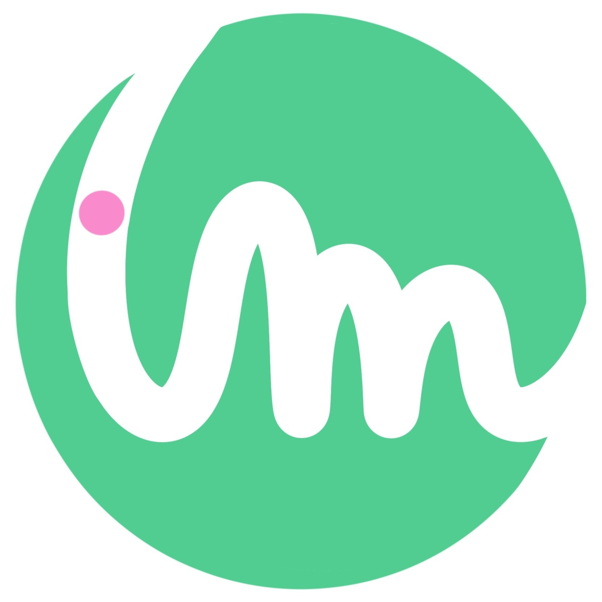
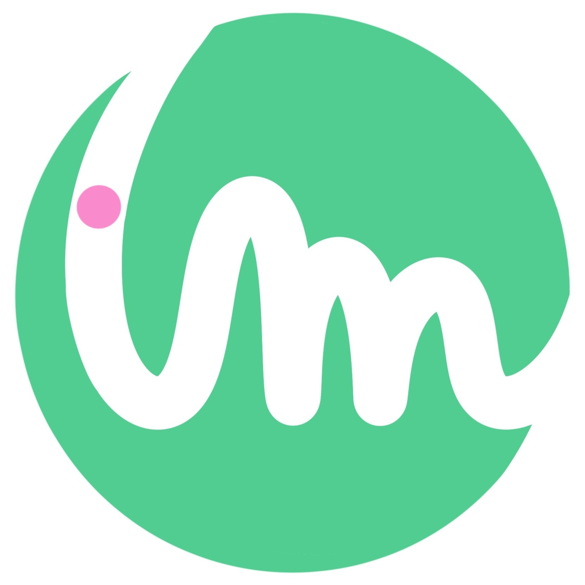
Abbiamo trasformato le scuole in luoghi più vivibili e sostenibili. Abbiamo creato aree dedicate a biciclette, mezzi leggeri e nuovi spazi verdi, progettati insieme a studenti e insegnanti.

Abbiamo formato studenti e docenti su temi come mobilità dolce, cittadinanza, sostenibilità e cura degli spazi comuni. La scuola diventa laboratorio di cambiamento e partecipazione.

Abbiamo raccolto e analizzato i tragitti casa-scuola per capire come si spostano gli studenti. I dati raccolti ci aiutano a progettare soluzioni concrete per una mobilità più sicura e sostenibile.
Il nostro primo obiettivo è quello di rigenerare un’area dedicata alla mobilità sostenibile, creando spazi che incentivano l’uso di mezzi di trasporto eco-friendly. Parliamo di stazioni di bike-sharing, aree di sosta per mezzi elettrici.
All'interno di questo progetto, un altro obiettivo fondamentale è lo sviluppo di luoghi legati agli interessi delle scuole, come un’aula in legno immersa nel verde.
Comprendere i percorsi degli studenti è essenziale per migliorare la mobilità sostenibile, attraverso questionari e analisi delle abitudini di viaggio.
In gruppi, abbiamo riflettuto su una domanda provocatoria: gli studenti possono davvero cambiare la scuola? Ne è nata una discussione viva e appassionata, che ci ha fatto riscoprire il nostro ruolo attivo nella comunità scolastica. La partecipazione è il primo passo per trasformare davvero i luoghi che viviamo.
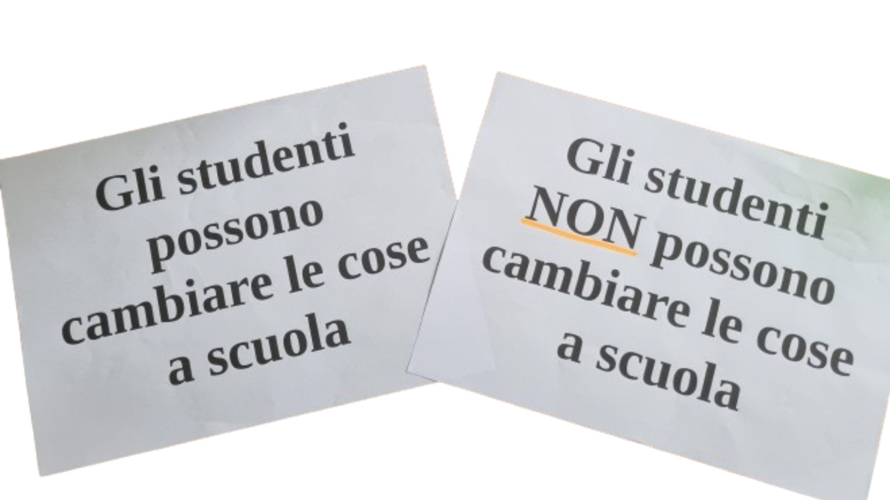Comunità non è solo convivenza: è relazione, è obiettivo condiviso. Abbiamo esplorato come le persone si uniscono per costruire qualcosa di più grande, mettendo in circolo energie, idee e responsabilità.
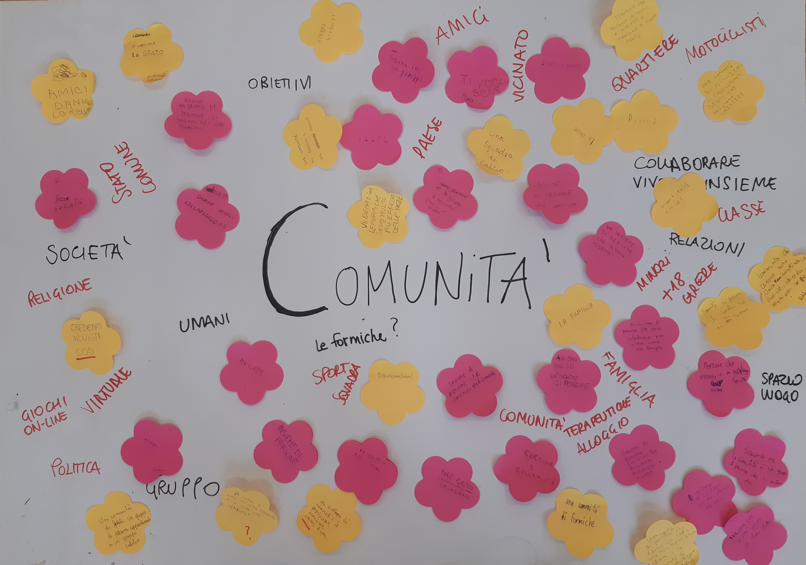Abbiamo analizzato le nostre abitudini di spostamento attraverso sondaggi e confronti tra pari. Un video sulle città del Nord Europa ci ha ispirati: la mobilità sostenibile non è un’utopia, ma un modello possibile da immaginare — e realizzare — anche qui.
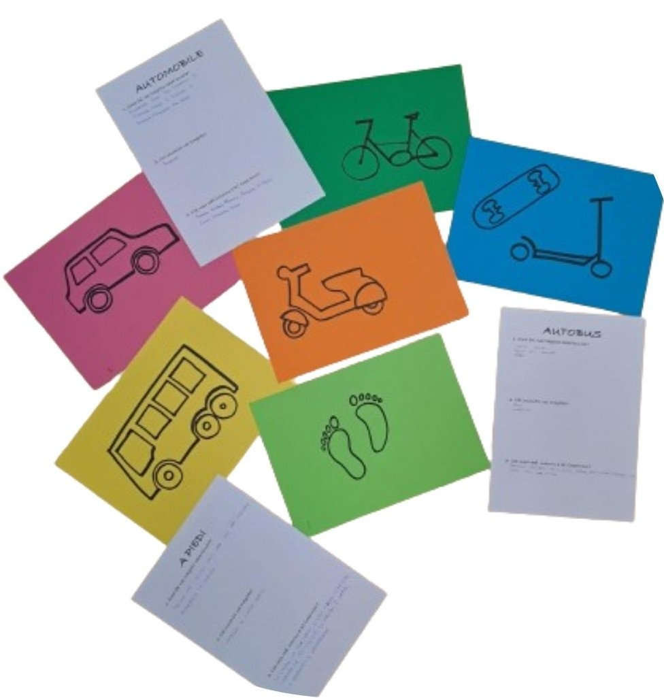La scuola è più di un edificio: è un ecosistema fatto di persone, percorsi e connessioni. Abbiamo immaginato come potrebbe evolvere il nostro spazio scolastico, dai tragitti quotidiani agli ambienti che viviamo ogni giorno. Perché uno spazio ben pensato genera relazioni migliori. immaginare — e realizzare — anche qui.
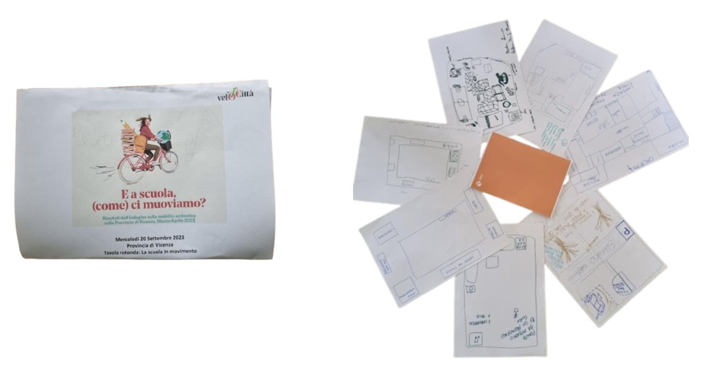L’idea diventa progetto: abbiamo misurato, disegnato e immaginato il nostro spazio ideale. Con il supporto degli educatori e l’ispirazione di Camposaz, abbiamo scoperto come creare un Mobility Corner in legno, sostenibile e su misura per la nostra scuola.
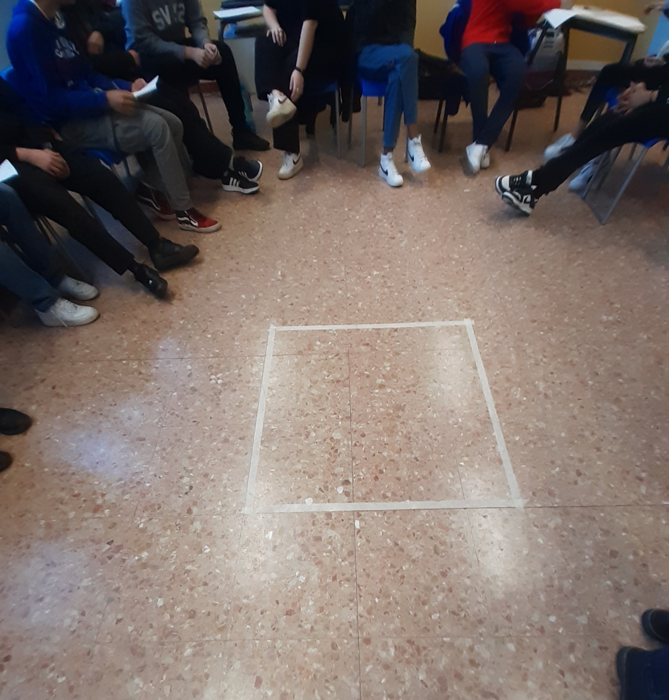Abbiamo sviluppato proposte concrete per progettare e comunicare il mobility corner in modo efficace e coinvolgente. Il nostro obiettivo è creare uno spazio dinamico che favorisca l’incontro, lo scambio e la collaborazione tra pari, arricchito dall’introduzione di un’area dedicata alle lezioni. misura per la nostra scuola.
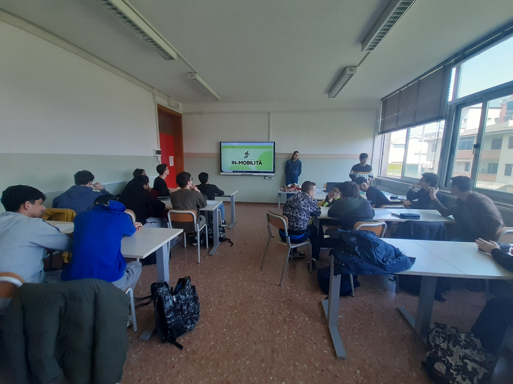Un’esperienza sul campo che ci ha aperto nuove prospettive, permettendoci di confrontarci con esperti di progettazione e comunicazione. A Vicenza abbiamo raccolto preziose idee e ispirazioni, trasformando la nostra visione in un progetto concreto e tangibile.
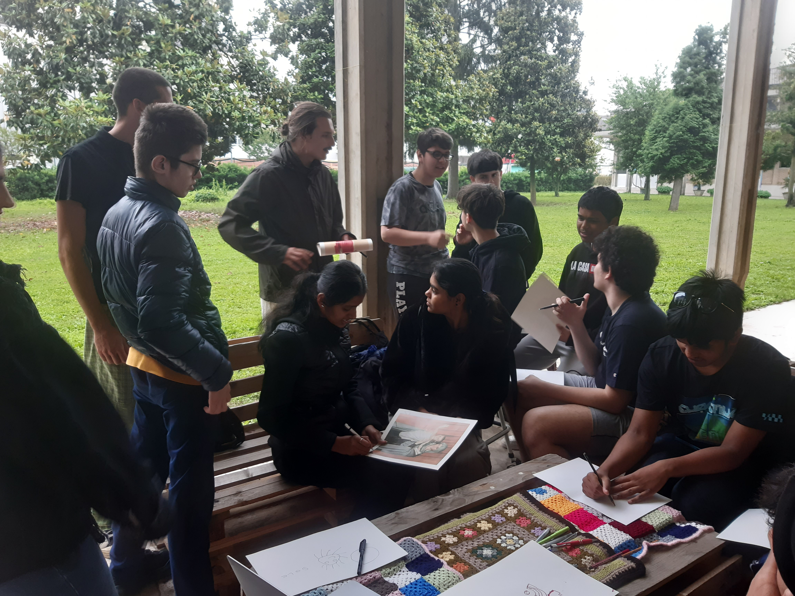Le autorità comunali e provinciali hanno partecipato con interesse, assistendo all’inaugurazione del mobility corner, che oggi rappresenta il simbolo tangibile di un anno di impegno, crescita e partecipazione collettiva.rogetto concreto e tangibile.

Abbiamo preso un momento di pausa per riflettere sull’impatto delle attività svolte nell’anno passato. Cosa abbiamo imparato? Quali sono le opportunità di miglioramento? Questo confronto ci ha permesso di raccogliere sfide e stimoli preziosi, gettando le basi per un nuovo anno di crescita e innovazione.

Abbiamo approfondito un tema fondamentale: la finanza etica, un modello che pone alcentro la persona e l’ambiente, orientando le decisioni su come e dove allocare le risorse. Attraverso riflessioni e incontri con realtà che praticano questo approccio, abbiamo scoperto come l’etica possa trasformare il modo di fare finanza, con un impatto positivo e responsabile sulla società.o positivo e responsabile sulla società.
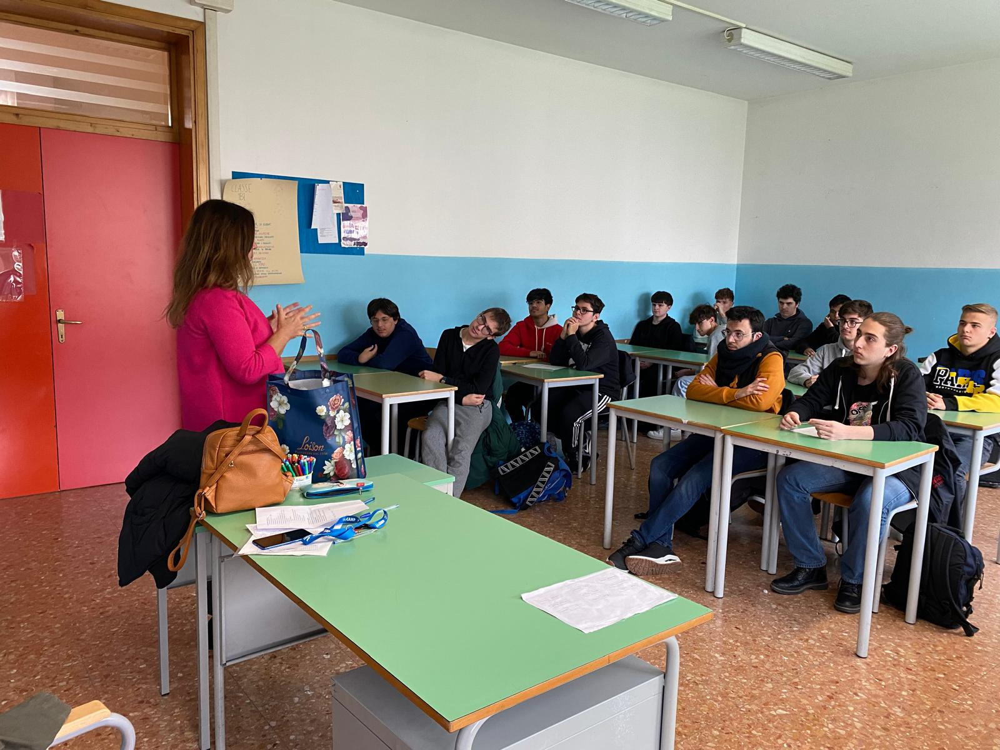Cos’è davvero un’azione culturale? Abbiamo esplorato diversi esempi, dal più formale al più informale, e messo in pratica quanto appreso progettando il nostro swap party: un evento pensato per promuovere il riuso, stimolare la creatività e diffondere la sostenibilità in modo concreto e partecipato.
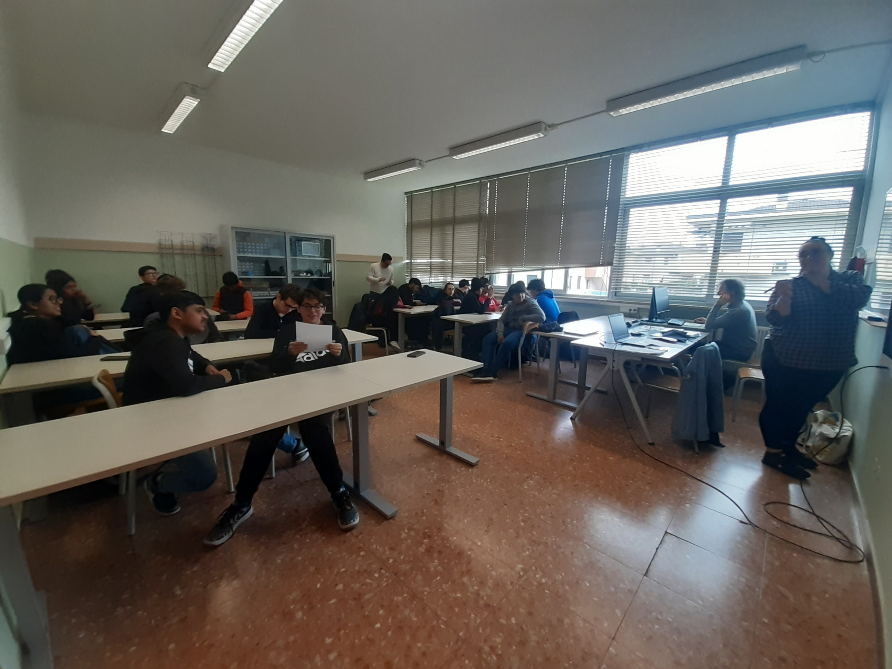L’arte dello scambio prende vita nel nostro swap party: un’esperienza unica dove abbiamo condiviso oggetti di ogni tipo, dall’abbigliamento alla cancelleria, fino ai libri. Un modo divertente e concreto per promuovere la sostenibilità e il consumo consapevole, trasformando il riuso in un momento di socialità e comunità.
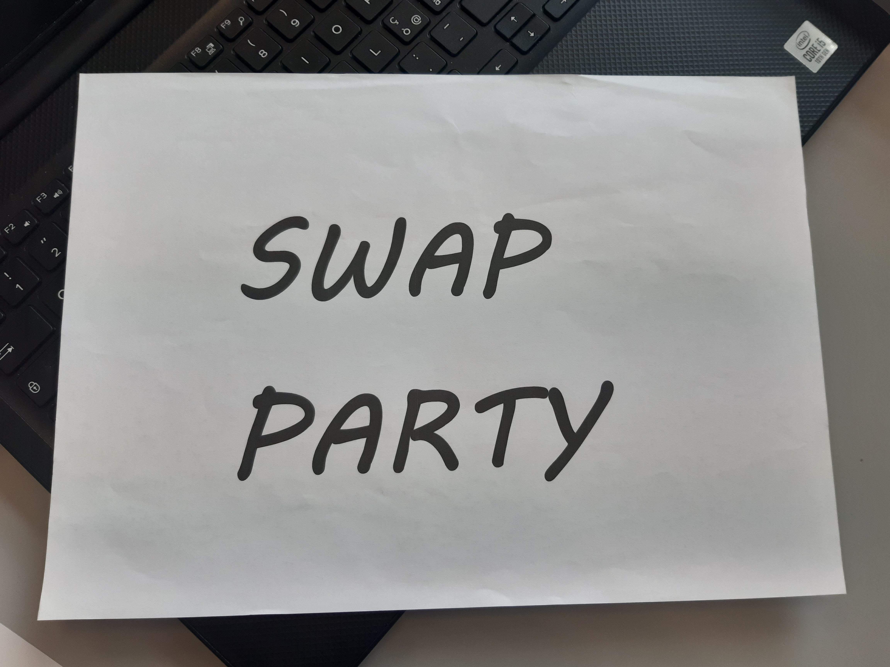In questo laboratorio pratico abbiamo scoperto come funzionano i suoi componenti, imparato a ripararla e a mantenerla in sicurezza. Un’esperienza concreta che ci ha insegnato a prenderci cura del nostro mezzo di trasporto, garantendo prestazioni ottimali e viaggi più sicuri.
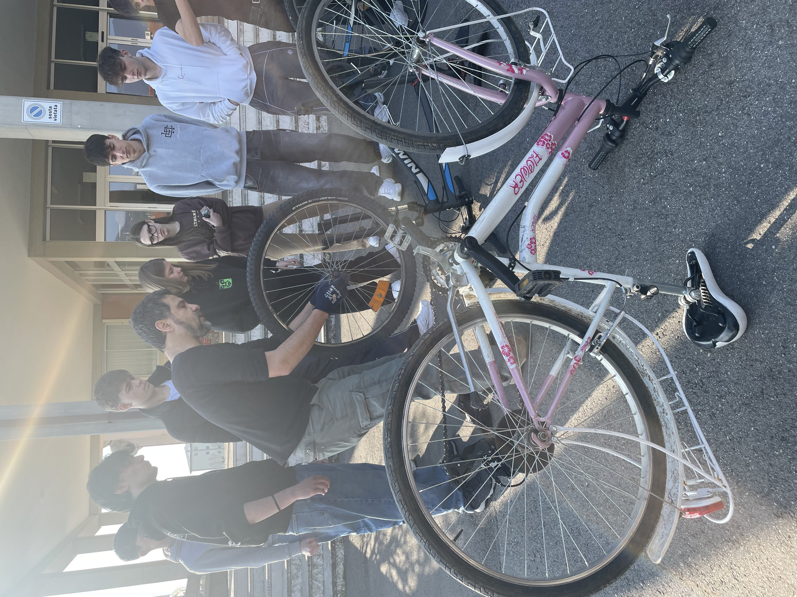Ci siamo organizzati in due gruppi: uno ha preparato il discorso per raccontare la nascita del sito e il cammino svolto durante i due anni di progetto; l’altro ha scritto una lettera rivolta alle istituzioni, per condividere riflessioni, risultati e proposte future.

- Urbana cooperativa sociale
- Vicenza: IIS Canova
- Vicenza: ITIS Rossi
- Schio: Liceo Tron-Zanella
- Montecchio: IIS Silvio Ceccato
- Thiene: ITET Aulo Ceccato
- referente mobilità: civi&co e veloCittà
- referente Mobility Corner: Camposaz
- Vicenza: Arci Servizio Civile
- Schio: Samarcanda coop. sociale
- Montecchio: Piano Infinito
- Thiene: Radicà cooperativa sociale
L’IIS Antonio Canova di Vicenza, che comprende un istituto tecnico e un liceo artistico, partecipa al progetto In-mobilità con una classe dell’indirizzo CAT, oggi composta da 18 alunni. L’istituto valorizza l’innovazione, la preparazione professionale e una solida formazione di base.
L’ITIS “Alessandro Rossi” di Vicenza, vicino al centro, è un istituto storico attento all’innovazione e al dialogo con il territorio. Offre cinque indirizzi e ha partecipato al progetto In-mobilità con un gruppo misto di studenti volontari di seconde. Oggi il gruppo conta circa dieci ragazzi.
L’istituto Tron-Zanella-Martini comprende tutti i licei di Schio, scientifico, classico, linguistico, artistico e scienze umane. La classe che ha partecipato al progetto è stata la 4BI formata da 22 studenti. Questo indirizzo pone particolare attenzione all’analisi critica stimolando la riflessione.
Al progetto hanno partecipato due classi CAT, una per anno, per un totale di 39 studenti. L’indirizzo “Costruzioni, Ambiente e Territorio” forma competenze su materiali, strumenti di rilievo, software tecnici, valutazioni economiche, gestione ambientale e cantieri in sicurezza.
PlaNet è una piattaforma di formazione sostenibile, pensata per essere accessibile, coinvolgente e stimolante. Si concentra su tematiche cruciali come alimentazione sostenibile, economia circolare, mobilità sostenibile, consumo energetico e diversità e inclusione (D&I). Utilizzando la gamification come tecnica di apprendimento, PlaNet rende l'acquisizione di competenze un'esperienza interattiva e motivante, promuovendo una maggiore consapevolezza e responsabilità verso un futuro più sostenibile e inclusivo.
Scopri di piùPlaNet è una piattaforma di formazione sostenibile, pensata per essere accessibile, coinvolgente e stimolante. Si concentra su tematiche cruciali come alimentazione sostenibile, economia circolare, mobilità sostenibile, consumo energetico e diversità e inclusione (D&I). Utilizzando la gamification come tecnica di apprendimento, PlaNet rende l'acquisizione di competenze un'esperienza interattiva e motivante, promuovendo una maggiore consapevolezza e responsabilità verso un futuro più sostenibile e inclusivo.
Scopri di piùPratham Madaan
Manuel Visentin
Giordano Peressini
Gioia Ferrando
Giordano Peressini